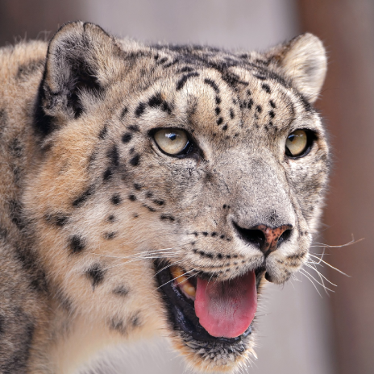
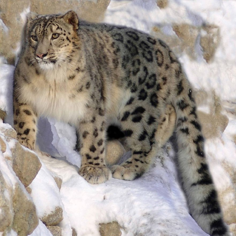

Introduction

The snow leopard (Panthera uncia), also known as the ounce, is a
felid in the genus Panthera native to the mountain ranges of
Central and South Asia. It is listed as Vulnerable on the IUCN Red
List because the global population is estimated to number fewer
than 10,000 mature individuals and is expected to decline about
10% by 2040. It is threatened by poaching and habitat destruction
following infrastructural developments. It inhabits alpine and
subalpine zones at elevations of 3,000–4,500 m (9,800–14,800 ft),
ranging from eastern Afghanistan, the Himalayas and the Tibetan
Plateau to southern Siberia, Mongolia and western China. In the
northern part of its range, it also lives at lower elevations.
Taxonomically, the snow leopard was long classified in the
monotypic genus Uncia. Since phylogenetic studies revealed the
relationships among Panthera species, it has been considered a
member of that genus. Two subspecies were described based on
morphological differences, but genetic differences between the two
have not been confirmed. It is therefore regarded as a monotypic
species.
Naming and Etymology
Both the Latin name uncia and the English word ounce are derived from the Old French once, which was also used for the Eurasian lynx (Lynx lynx). Once is thought to have evolved from an earlier variant of lynx by false splitting; lonce was interpreted as l'once, in which l' is the elided form of the French definite article la ('the'), leaving once to be perceived as the animal's name.[2] The word panther derives from the classical Latin panthēra, itself from the ancient Greek πάνθηρ pánthēr, which was used for spotted cats.[3]
Taxonomy and Evolution

Felis uncia was the scientific name used by Johann Christian
Daniel von Schreber in 1777 who described a snow leopard based on
an earlier description by Georges-Louis Leclerc, Comte de Buffon,
assuming that the cat occurred along the Barbary Coast, in Persia,
East India and China.[4] The genus name Uncia was proposed by John
Edward Gray in 1854 for Asian cats with a long and thick tail.[5]
Felis irbis proposed by Christian Gottfried Ehrenberg in 1830 was
a skin of a female snow leopard collected in the Altai Mountains.
He also clarified that several leopard (P. pardus) skins were
previously misidentified as snow leopard skins.[6] Felis uncioides
proposed by Thomas Horsfield in 1855 was a snow leopard skin from
Nepal in the collection of the Museum of the East India
Company.[7]
Uncia uncia was used by Reginald Innes Pocock in 1930 when he
reviewed skins and skulls of Panthera species from Asia. He also
described morphological differences between snow leopard and
leopard skins.[8] Panthera baikalensis-romanii proposed by a
Russian scientist in 2000 was a dark brown snow leopard skin from
the Petrovsk-Zabaykalsky District in southern Transbaikal.[9]
The snow leopard was long classified in the monotypic genus
Uncia.[10] It was subordinated to the genus Panthera based on
results of phylogenetic studies.[11][12][13][14]
Until spring 2017, there was no evidence available for the
recognition of subspecies. Results of a phylogeographic analysis
indicate that three subspecies should be recognised:[15]
- P. u. uncia in the range countries of the Pamir Mountains
- P. u. irbis in Mongolia, and
- P. u. uncioides in the Himalayas and Qinghai.
Additionally, an extinct subspecies Panthera uncia pyrenaica was described in 2022 based on material found in France.[20]
Evolution
Based on phylogenetic analysis of DNA sequence sampled across the
living Felidae, the snow leopard forms a sister group with the
tiger (P. tigris). Genetic divergence time of this group is
estimated at 4.62 to 1.82 million years ago.[11][21] The snow
leopard and the tiger probably diverged between 3.7 to 2.7 million
years ago.[12] Panthera originates most likely in northern Central
Asia. Panthera blytheae excavated in western Tibet's Ngari
Prefecture is the oldest known Panthera species and exhibits skull
characteristics similar to the snow leopard.[23]
The mitochondrial genomes of the snow leopard, the leopard and the
lion (P. leo) are more similar to each other than their nuclear
genomes, indicating that their ancestors hybridised at some point
in their evolution.[24]
Characteristics
The snow leopard's fur is whitish to grey with black spots on head
and neck, with larger rosettes on the back, flanks and bushy tail.
The belly is whitish. Its eyes are pale green or grey in color.
Its muzzle is short and its forehead domed. Its nasal cavities are
large. The fur is thick with hairs between 5 and 12 cm (2.0 and
4.7 in) long. Its body is stocky, short-legged, and slightly
smaller than the other cats of the genus Panthera, reaching a
shoulder height of 56 cm (22 in), and ranging in head to body size
from 75 to 150 cm (30 to 59 in). Its tail is 80 to 105 cm (31 to
41 in) long.[25] It weighs between 22 and 55 kg (49 and 121 lb),
with an occasional large male reaching 75 kg (165 lb), and small
female of under 25 kg (55 lb). [26] Its canine teeth are 28.6 mm
(1.13 in) long and are more slender than those of the other
Panthera species.[27] In relation to the length of its skull and
width of its palate, it has large nasal openings, which allow for
increasing the volume of air inhaled with each breath, and at the
same time for warming and humidifying cold dry air.[28] It is not
especially adapted to high-altitude hypoxia.[29]
The snow leopard shows several adaptations for living in a cold,
mountainous environment. Its small rounded ears help to minimize
heat loss. Its broad paws well distribute the body weight for
walking on snow, and have fur on their undersides to increase the
grip on steep and unstable surfaces; it also helps to minimize
heat loss. Its long and flexible tail helps to maintain balance in
the rocky terrain. The tail is very thick due to fat storage, and
is covered in a thick layer of fur, which allows the cat to use it
like a blanket to protect its face when asleep.[30]
The snow leopard differs from the other Panthera species by a
shorter muzzle, an elevated forehead, a vertical chin and a less
developed posterior process of the lower jaw.[8] It cannot roar
despite its partly ossified hyoid bone, as its 9 mm (0.35 in)
short vocal folds provide little resistance to airflow.[31][32]